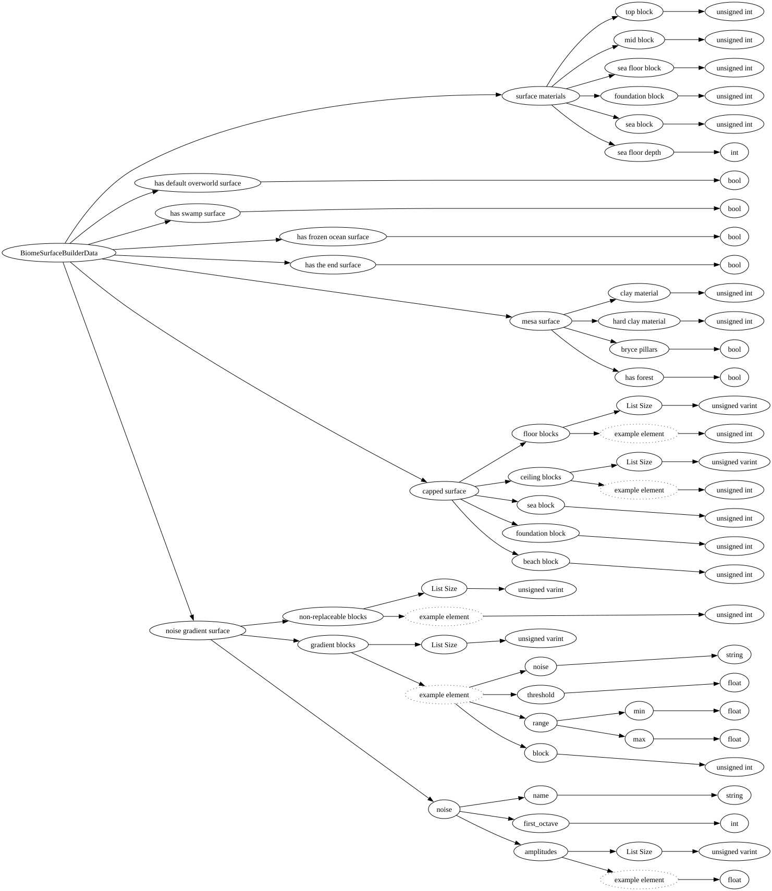

| Field Name | Field Type | Field Constraints | Field Notes |
|---|---|---|---|
| surface materials | BiomeSurfaceMaterialData | ||
| has default overworld surface | bool | ||
| has swamp surface | bool | ||
| has frozen ocean surface | bool | ||
| has the end surface | bool | ||
| mesa surface | BiomeMesaSurfaceData | ||
| capped surface | BiomeCappedSurfaceData | ||
| noise gradient surface | BiomeNoiseGradientSurfaceData |